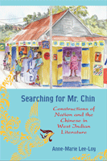

<body bgcolor="#FFFFFF" text="#000000" link="#0000FF" vlink="#CC0000" alink="#CC0000"><center><hr width="350" size="1" align="center" noshade>West Indian literary representations of local Chinese populations illuminate concepts of national belonging<hr width="350" size="1" align="center" noshade><p><a href="https://cdcshoppingcart.uchicago.edu/Cart/ChicagoBook.aspx?ISBN=9781439901304&&PRESS=temple" target="_top">Buy this book!</a> | <a href="https://cdcshoppingcart.uchicago.edu/Cart/Cart.aspx?PRESS=temple" target="_top">View Cart</a> | <a href="https://cdcshoppingcart.uchicago.edu/Cart/Cart.aspx?PRESS=temple" target="_top">Check Out</a></p><p></p></center><!--none//--><h1>Searching for Mr. Chin</h1>
<H2>Constructions of Nation and the Chinese in West Indian Literature</H2>
<h3>Anne-Marie Lee-Loy</h3>
<P>cloth 1-4399-0130-9 $45.50, May 10, <FONT COLOR=#990033>Available</FONT>
<br>Electronic Book 1-4399-0132-5 $45.50 <FONT COLOR=#990033>Available</FONT>
<BR> 198 pp
5.5x8.5
</P><h3 align="center"><P><font color="#996633">Gordon K. and Sybil Lewis Book Award,
2011</font></P>
</H3>
<BLOCKQUOTE><I>"Given how little criticism there is on textual images of the Chinese in the West Indies, </i>Searching for Mr. Chin<i> is a great contribution to the literature. Lee-Loy’s well-written and -researched book fills a surprising lacuna in Latin American and Caribbean studies, as well as in Chinese diaspora studies. It takes into account other publications on the Chinese experience in the Caribbean and delimits more clearly the postcolonial theoretical approach to the texts."</I>
<br>&#151<b>Ignacio López-Calvo</b>, Professor of Latin American Literature at the University of California, Merced, and author of <I>Imaging the Chinese in Cuban Literature and Culture</I></BLOCKQUOTE>
<p>What do twentieth-century fictional images of the Chinese reveal about the construction of nationhood in the former West Indian colonies? In her groundbreaking interdisciplinary work, <em>Searching for Mr. Chin</em>, Anne-Marie Lee-Loy seeks to map and understand a cultural process of identity formation: &quot;Chineseness&quot; in the West Indies. Reading behind the stereotypical image of the Chinese in the West Indies, she compares fictional representations of Chinese characters in Jamaica, Trinidad, and Guyana to reveal the social and racial hierarchies present in literature by popular authors such as V.S. Naipaul and Samuel Selvon, as well as lesser known writers and in less accessible literary texts.</p>
<p>Using historical, discursive, and theoretical frameworks for her literary analysis, Lee-Loy shows how the unstable and ambiguous belonging afforded to this middleman minority speaks to the ways in which narrative boundaries of the nation are established. In addition to looking at how Chinese have been viewed as &quot;others,&quot; Lee-Loy examines self-representations of &quot;Chineseness&quot; and how they complicate national narratives of belonging. </p>
<BR>&nbsp;<h2>Excerpt</h2><P>Excerpt available at <a href="http://www.temple.edu/tempress">www.temple.edu/tempress</a></p>
<BR>&nbsp;<h2>Reviews</h2>
<p><I>“</i>Searching for Mr. Chin<i> is written with a rare clarity. Lee-Loy demonstrates a sensitivity to the texts and a familiarity with the context in which they were written. Her arguments are persuasive, and she deploys insights from a wide range of disciplines. This book will undoubtedly attract a readership in the academic world and potentially among a more broadly based readership, especially in the Chinese-Caribbean diaspora in the Americas.”</I>
<br>&#151<b>Howard Johnson</b>, Squire Professor of History and Black American Studies at the University of Delaware and the author of <i>The Bahamas From Slavery to Servitude, 1783-1933</i>
<BR>&nbsp;<h2>Contents</h2><P>
<p>Acknowledgments
<br>Introduction
<br>1. Forgotten Remembrance: Literature and the Banal Performance of Nation
<br>2. &quot;Just Another Chinaman&quot;: The Chinese as Outsiders to the Nation
<br>3. &quot;A Real Creolise Chinee&quot;: Establishing Creole Inclusiveness
<br>4. From the Other Side of the Counter: Chinese West Indian Self-Representations
<br>Conclusion
<br>Notes
<br>Selected Bibliography
<br>Index</p>
</P><BR>&nbsp;<H2>About the Author(s)</H2>
<table><tr><td valign="top"><img src="/tempress/authors/2061_au1.gif" height="90" width="75"></td><td width="100%" valign="middle"><p><b>Anne-Marie Lee-Loy</b> is an Assistant Professor of English at Ryerson University.</P></td></tr></table>
<BR><H2>Subject Categories</H2>
<p><A HREF="/tempress/literature.html" TARGET="_top">Literature and Drama</a>
<BR><A HREF="/tempress/latin.html" TARGET="_top">Latin American/Caribbean Studies</a>
<BR><A HREF="/tempress/asian_amer.html" TARGET="_top">Asian American Studies</a>
</p>
<p align="center"><a href="https://cdcshoppingcart.uchicago.edu/Cart/ChicagoBook.aspx?ISBN=9781439901304&&PRESS=temple" target="_top">Buy this book!</a> | <a href="https://cdcshoppingcart.uchicago.edu/Cart/Cart.aspx?PRESS=temple" target="_top">View Cart</a> | <a href="https://cdcshoppingcart.uchicago.edu/Cart/Cart.aspx?PRESS=temple" target="_top">Check Out</a></p><p><font face="Arial" size="1"><a href="copyright.html" onMouseOver="window.status='Web Copyright Policy';return true;" onMouseOut="window.status=''" title="Web Copyright Policy">&copy;</a> 2015 <a href="http://www.temple.edu" target="new" onMouseOver="window.status='Link to Temple University home page';return true;" onMouseOut="window.status=''" title="Link to Temple University home page">Temple University</a>. All Rights Reserved. http://www.temple.edu/tempress/titles/2061_reg.html</font></p>